| 概要 | 情報 | ボス戦 |
| 穴場 | か･タマリ場 | 正統･穴場 |
| アイテム一覧 | 攻略チャート | 地図 |
| 敵キャラ一覧 | 変な写真 | Ys VI 攻略へ |
| 画 像 | 行 動 | 所 持金 | 所 持エメル | ア イテム | 出 現場所 |
| 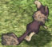 | 通称:リス 基本的にフラフラしている。 アドルを発見すると、走って近づきカワイイ体当たりを仕掛ける。 |
2 | 1 | チトの実 | クアテラ樹海 前半 |
| 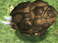 | ボルグ 基本的にフラフラしている。 アドルを発見すると、（歩くような速さで）走って近づく。接触するとアドルが吹き飛びます。 |
4 | 1 | チトの実 | クアテラ樹海 前半 |
| 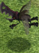 | 通称:カブトムシ 空中を飛んでおり、アドルを発見すると着陸して突進してくる。 |
4 | 1 | チトの実 | クアテラ樹海 前半 |
| 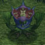 | リーファ アドルが近くにいるのを発見すると、毒性のある霧を吹きかける。接触すると、時々毒状態になる。 |
3 | 1 | カミオの花 蜂蜜 |
クアテラ樹海 前半 |
| 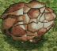 | 通称：白いボルグ 鳥が時々運んでくる白いボルグ。 行動はボルグと同じだが、猛烈に強い。 |
3 | 5 | 30 | クアテラ樹海 前半 グラナヴァリス |
| 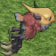 | 通称：鳥 どこからともなく現れて、色々なモンスターを置いていく嫌な奴。当人が攻撃してこないのが唯一の救いか。 |
4 | 1 | クアテラ樹海 前半、後半 カナーン平原 グラナヴァリス 前半、後半 |
|
| 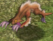 | シーラム 普段は勝手気ままに行動しており、水辺で水を飲んでいることもある。 獲物を発見すると早速襲いかかる準備をする。相手が自分の方を向いていない場合は走って近寄り、自分の方を向いている場合は身をかがめて近寄る。 攻撃は体当たり。 |
4 | 1 | チトの実 | カナーン平原 |
| 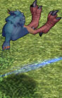 | シードロン 相手が攻撃しようとすると、ジャンプして相手の後ろに周り、爪でひっかく。 また、水鉄砲で遠距離攻撃をしてくることも。 |
4 | 1 | チトの実 蜂蜜 |
カナーン平原 |
| 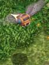 | 通称：ハチ（小） アドルを発見すると体当たりを仕掛けてくる。そして、衝突すると自らは死亡。 そのかわり、アドルを毒状態にする。 |
4 | カミオの花 | カナーン平原 | |
| 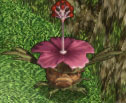 | 通称：ハナ Pink アドルを発見すると、触手を回転させながら攻撃してくる。攻撃範囲が広いので注意。 |
20 | 5 | トチの実 蜂蜜 |
カナーン平原 |
| 画 像 | 行 動 | 所 持金 | 所 持エメル | ア イテム | 出 現場所 |
| 画 像 | 行 動 | 所 持金 | 所 持エメル | ア イテム | 出 現場所 |
| 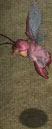 | 通称：エビ アドルを発見すると、発光しながら体当たりをしてくる。それに接触すると、アドルが吹き飛びます。 |
20 | 5 | グラナヴァリス 前半 | |
| 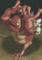 | ダムヘッド アドルが近くにいると、巣穴からブンダガーを持ってくる。そして、アドルがいるところへ向かって投げつけてくる。 かなり嫌らしい攻撃だが、離れていると無害。 |
20 | 5 | 蜂蜜 | グラナヴァリス 前半、後半 |
| 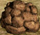 | ブンダガー 見た目は岩だが、アドルが近づくと爆発する。爆風に接触するとアドルが吹き飛びます。 また、ダムヘッドがピンポイント攻撃として使用することも。 |
3 | グラナヴァリス 前半、後半 | ||
| 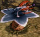 | 通称：ハナ Blue 頭の花弁が回転していない時は無敵なので手のだしようがない。花弁を飛ばしている隙に本体を攻撃しましょう。 ただし、花弁はブーメランのように戻ってくるので注意。 |
20 | 2 | チトの実 | グラナヴァリス 前半 |
| 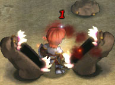 | 通称：ドロ 下段突き以外が効かない嫌らしい敵。 見た目も凶悪。 注意：中央にいる赤毛の剣士ではありません。茶色い牙をむいた奴です。 |
20 | 5 | 蜂蜜 | グラナヴァリス 後半 |
| 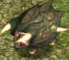 | 通称：何とかザウルス 緑 動きが遅いが、接触するだけで加重状態になるのは恐怖。 |
4 | 5 | 蜂蜜 | カナーン平原 グラナヴァリス |
| 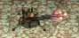 | 通称：こぐも 触角を出さなければ無害。下段突き以外の攻撃が非常に当たりにくいためにかなり邪魔な存在。 |
3 | 1 | チトの実 | ミトス参道 |
| 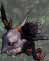 | 通称：盗鳥 黒 確かアドルの所持金を奪っていく。奪われ後に倒しても、返ってこない。 |
4 | 1 | グラナヴァリス クアテラ樹海 後半 カナーン平原 |
|
| 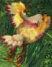 | 通称：盗鳥 黄 アドルの所持しているエメルの一部を奪っていく。奪われた後に倒しても、返ってこない。 |
4 | 1 | グラナヴァリス クアテラ樹海 後半 カナーン平原 |
|
| 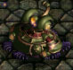 | 通称：拠点防御装置 レーザータイプ アドルが近づくとレーザーを発射。レーザーなのに触れるとアドルが吹き飛びます。 |
40 | 30 | 忘却の遺跡 | |
| 画 像 | 行 動 | 所 持金 | 所 持エメル | ア イテム | 出 現場所 |
| 画 像 | 行 動 | 所 持金 | 所 持エメル | ア イテム | 出 現場所 |
| 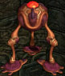 | 通称：バウンサー とにかくはねて攻撃をかわしたり、移動をしたり、攻撃を仕掛けたりと素早い敵。 衝撃波でもダメージを受けるので注意。 |
20 | 5 | 蜂蜜 | 忘却の遺跡 |
| 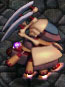 | 通称：ガード アドルを発見し次第、ゆっくりと近づきかぎ爪でひっかく。それ以外これといった特徴がない。 |
20 | 5 | 蜂蜜 | 忘却の遺跡 |
| 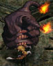 | 通称：ある意味最強 表面の装甲を破壊し尽くさない限り本体にダメージを与えられない。しかも、装甲はすぐに修復されるので素早い攻撃が必要。 移動する時に足跡が炎と化し、それに接触するとダメージを受けるが、それ以外にダメージを受ける心配がない。 |
30 | 蜂蜜 | 忘却の遺跡 | |
| 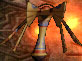 | 通称：バーちゃん 黄色 ふわふわと浮遊し、アドルを発見すると8方向に変なものを発射する。 浮遊しているので、アドルが手を出せない場所から攻撃をしてくることも。 |
20 | 30 | 忘却の遺跡 | |
| 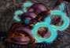 | 通称：拠点防御装置 ビーバータイプ アドルを発見すると、青く光るビーバーを次々に投げてくる。しかも、本体が破壊されてもビーバーはかならず戻ってくるので注意。 |
20 | 30 | 忘却の遺跡 | |
| 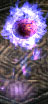 | 通称：怨霊 よく分からないけれど、宝箱を開けると現れる。忘却の遺跡の中では一番ステータスが高い。 |
20 | 15 | 忘却の遺跡 | |
| 画 像 | 行 動 | 所 持金 | 所 持エメル | ア イテム | 出 現場所 |
| 概要 | 情報 | ボス戦 |
| 穴場 | か･タマリ場 | 正統･穴場 |
| アイテム一覧 | 攻略チャート | 地図 |
| 敵キャラ一覧 | 変な写真 | Ys VI 攻略へ |